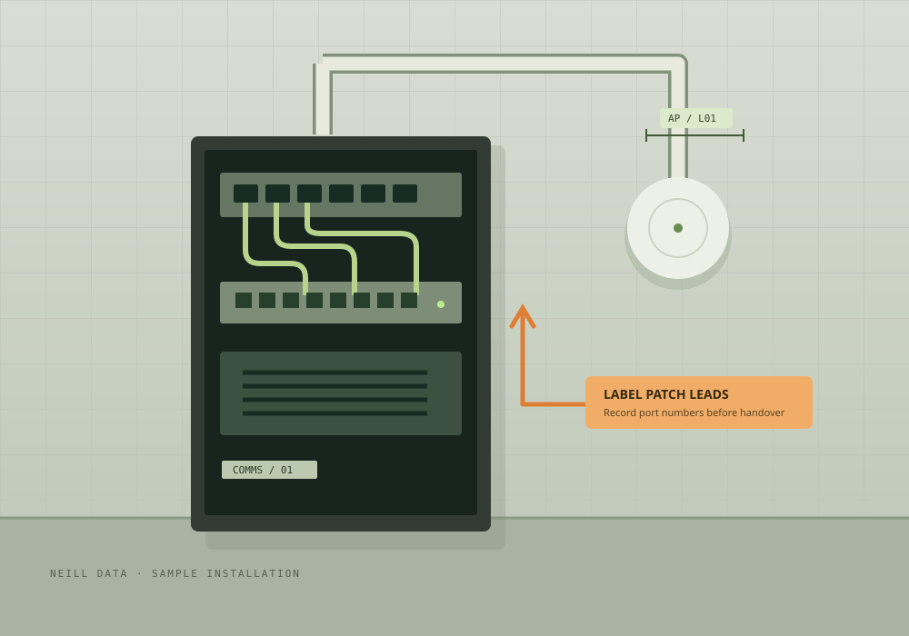

THE FIELD COLLECTION / 01
Small tools.
Better site records.
Mark up a photo. Build a plan legend. Give every app its own identity. Your next job starts here.
Made to work
across the suite.
MAKE THE DETAIL CLEAR
A picture.
With a point.
Show the cable route, flag a defect or label the next task. Add arrows, shapes, notes and dimensions to a separate image copy.
Your photo stays on this device. Export a PNG copy when you’re done. Dimensions are labels you enter, not calculated measurements.

ILLUSTRATION · NO CUSTOMER DATAOpen a photo
Use a site photo or the sample to try the tools.
Make your mark
Use touch, a stylus or a mouse. Undo any step.
Keep the evidence
Export your annotated copy and retain the original.
A SHARED LANGUAGE FOR YOUR PLANS
Trade symbols
Choose symbols to build a legend, or download the complete collection.
Neill project symbols for clearly labelled plans. These are not certified drafting-standard symbols. The CSV uses Planner’s existing category format; importing it does not change the marker renderer.
ONE FAMILY. EVERY APP DISTINCT.
Favicons & interface icons
Recognisable app shapes, familiar suite colours and a matching set of everyday tools.
READY FOR YOUR NEXT RELEASE
Give the app a shape, not just a colour.
Planner gets a plan pin. Quote gets a document. Timesheet gets a clock. The download includes SVG originals and app PNGs for favicons, Apple touch icons and home-screen icons. See each card for its suggested use.